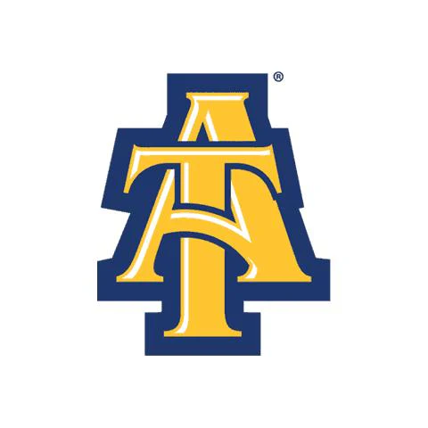

Terrale Mobley
Summary
A Success-driven and focused business analyst looking for a new role, bringing extensive expertise of automating manual processes, diagnosing existing inefficiencies and proposing innovative solutions based on specified needs.
Education
Gardner-Webb University
- Master of Business Administration - MBA, Business Administration and Management, General
- September 2020
North Carolina Agricultural and Technical State University
- Bachelor's degree, Economics
- May 2016

Work Experience
- United Airlines
- IT Business Analyst (Apr 2023 - Present)
- Create Project Development Docs, Project Plans, and Requirements for IT enhancements/applications.
- Create Process Mapping documentation using Visio, Figma.
- Work with Business and Functional users to gather and analyze project requirements.
- SME in our EASE application.
- Manage E2E process for EASE/Engineering Authorization projects.
- Use Service-Now to submit request for environments and submit change request.
- Tested the development of the EASE application to provide feedback about our services to business.
- Entera
- System Analyst (Aug 2021- Apr 2023)
- Developed business plans, determine (KPI) Key Performance Indicators, and coordinate the measurement result.
- Develop digital communication strategies and oversee the implementation.
- Manage Projects and create a detailed business process roadmaps for the Brokerage dept.
- Work with stakeholders to design the roadmap and measure production values ensuring cost-efficient processes.
- Create Project Development Docs, Project Plans, and Requirements for Brokerage enhancements/applications.
- Manage the E2E process for Brokerage enhancements.
- SME in our data services and working in all parts of our technical product.
- Worked with the Business and Functional users to analyze and write client’s requirements.
- Identify challenges within the projects and devise software solutions in conjunction with technical staff.
- Testing our applications and providing feedback to management.
- Manage User access to the CRM application while also submitting request through ServiceNow.
- Track, Escalate, and Manage issues from End User to Resolution.
- Create Process Mapping using Lucid/Visio software.
- NRG
- Business Analyst
- Designs/implements/manages robust processes and/or database solutions to support new business and operational activities.
- Leverage existing software and/or create new tools to automate repetitive and repeatable processes.
- Continually evaluate effectiveness of Marketing Execution processes and initiate processes and system improvement activities
- Develop approach documentation, process flows, and/or business requirements for new Marketing and Operational capabilities and products needed to support campaigns, including all cross- functional stakeholders from operations and IT in the review.
- Develop digital communication strategies and oversee the implementation.
- Develops deep subject matter expertise in key operational tools as necessary.
- Facilitate cross-functional team discussions to develop timelines for Retail campaigns, new product development and project delivery.
- Creates, coordinates, and executes user acceptance test plans to ensure successful launch of new capabilities.
- Manage the Product Development project queue and work with IT to prioritize through schedule conflicts and ensure timely delivery.
- Manage the development, implementation, testing, and launch of new Products with IT and Operations
- Monitor customer communications for multiple brands – both automated and manual – to ensure compliance with rules, internal policies, and regulatory guidelines.
- Perform quality assurance tests to ensure links, image, subject lines, and dynamic elements are functioning correctly.
- Develop Digital Communications strategies and oversee the implementation process.
- Duke Energy
- Business Analyst (Dec 2019 - May 2021)
- Manage SAP Marketing for Outbound Communications.
- Develop digital communication strategies and oversee the implementation.
- Create segmentation models for target groups used to promote to customers.
- Collaborate with business stakeholders, Development and Quality Assurance teams to define, validate, and facilitate testing and implementation.
- Primary contact to answer any questions related to requirements testing throughout the product testing phase for marketing.
- Create functional documents for product implementation.
- Coordinate testing in Agile settings
- Wells Fargo
- Business Systems Consultant (Mar 2017 - Sept 2018)
- Partner with Development and Quality Assurance teams as well as participants from the Lines of Business to manage User Acceptance Testing for Retail, Wholesale, and Risk applications.
- Primary contact to answer any questions related to requirements testing throughout the UAT phase.
- Coordinate Testing in both Waterfall and Agile settings
- Consultant for Risk Applications to include: GSMOS Retail & International (Waterfall), TRIMS(Agile), CAAP(Agile)
- Review BRDs and FSDs for accuracy with QA and DEV teams.
- Liaison between technology and Line of Business to answer any questions related to requirements testing throughout the UAT phase.
- Document UAT Test Plans, User Stories and User Scripts, Risk Traceability Matrix, and Test Summary according to TPM Methodology
- Communicate Requirements with Line of Business, QA, and UAT Lead.
- Facilitate meetings with the project teams during the UAT phase.
- Track and log defects in ALM, TFS and Excel.
- Train Team Members on the UAT Process and Testing Phase Process
- Manage access to Wells Fargo tech systems.
- Creates, coordinates, and executes user acceptance test plans to ensure successful launch of new capabilities.
- Manage the Product Development project queue and work with IT to prioritize through schedule conflicts and ensure timely delivery.
- Manage the development, implementation, testing, and launch of new Products with IT an operation.
- Monitor customer communications for multiple brands – both automated and manual – to ensure compliance with rules, internal policies, and regulatory guidelines.
- Perform quality assurance tests to ensure links, image, subject lines, and dynamic elements are functioning correctly.
- Develop digital communication strategies and oversee the implementation.
Skills
Microsoft Office • Project Management • Agile & Waterfall Methodologies • UAT Coordination • Defect
Remediation • SQL • Project Planning • User Story Development • Business Process Mapping • Scriptwriting • Service-Now • Jira • SAP
Contact
Hobbies
Cite Photos